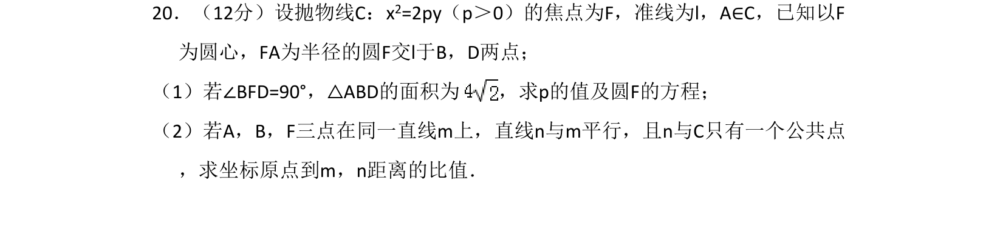
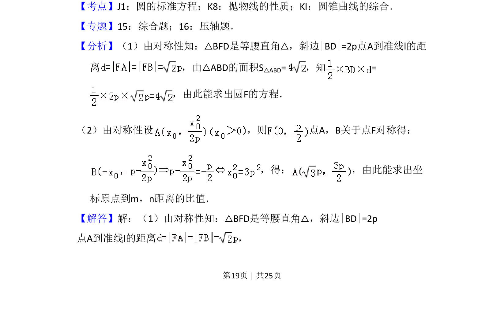
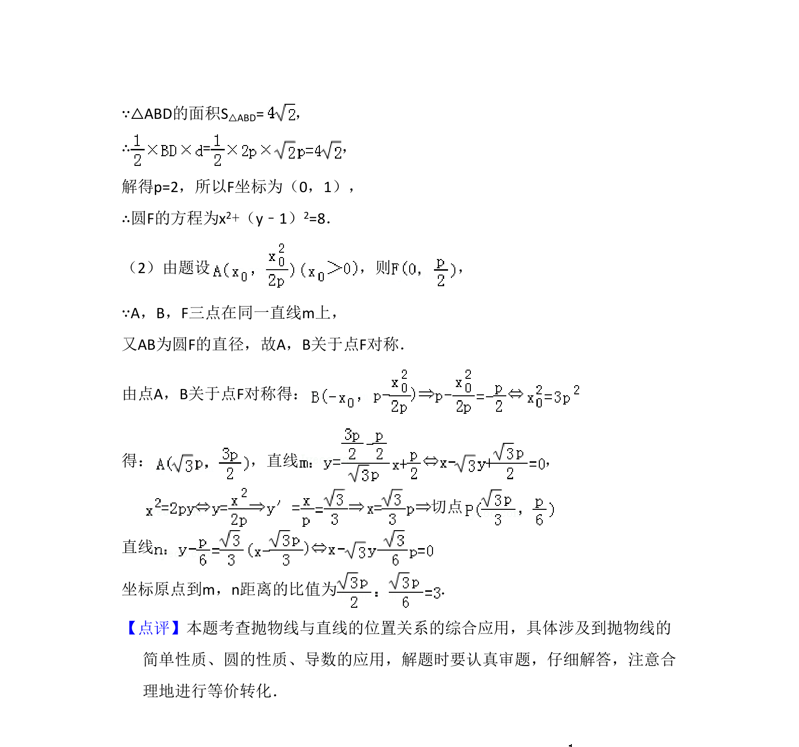

考点：圆标准方程 抛物线性质 圆锥曲线的综合

抛物线几何性质结合圆方程，求解参数值及距离比。


📄 原 PDF 第 19 页：
素材/真题/吉林/2008-2024·（吉林）数学高考真题/2012年高考数学试卷（理）（新课标）（解析卷）.pdf
20．（12分）设抛物线C：x2=2py（p＞0）的焦点为F，准线为l，A∈C，已知以F 为圆心，FA为半径的圆F交l于B，D两点； （1）若∠BFD=90°，△ABD的面积为 ，求p的值及圆F的方程； （2）若A，B，F三点在同一直线m上，直线n与m平行，且n与C只有一个公共点 ，求坐标原点到m，n距离的比值．
【考点】J1：圆的标准方程；K8：抛物线的性质；KI：圆锥曲线的综合．菁优网版权所有 【专题】15：综合题；16：压轴题． 【分析】（1）由对称性知：△BFD是等腰直角△，斜边|BD|=2p点A到准线l的距 离 ，由△ABD的面积S △ABD=，知= ，由此能求出圆F的方程． （2）由对称性设 ，则 点A，B关于点F对称得： ，得： ，由此能求出坐 标原点到m，n距离的比值． 【解答】解：（1）由对称性知：△BFD是等腰直角△，斜边|BD|=2p 点A到准线l的距离 ，